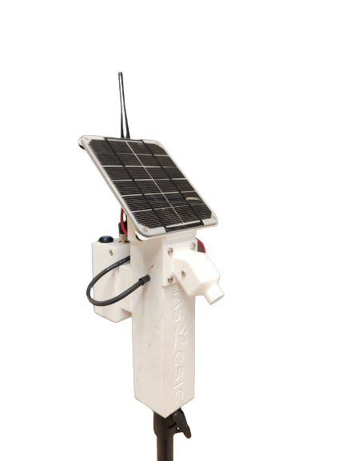

OWN DEVELOPMENTS

PyRADTEMCam
PyRADTEMCAM addresses the challenge of improving thermography accuracy in agriculture by correcting errors in drone-mounted thermal cameras using continuous temperature sensors, calibration panels, algorithms and modeling.
Check development
Nostalgic Visualizator
A visualizer for historical images in Spain, allowing users to select a region of interest and explore archival imagery from various periods. This tool offers an accessible way to study landscape and historical changes over time
Check development.
Python Courses
I have conducted Python courses focused on agriculture, covering data analysis, image processing, and geospatial data analysis. These courses help professionals apply Python to optimize process for better decision-making on field
Check development